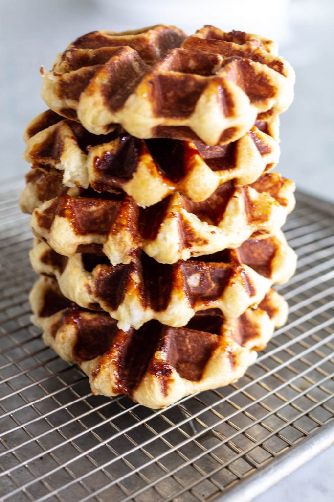

Liege Waffle Recipe

Description
These are my favourite recipe for Belgian Liege Waffles. An absolutely delicious recipe using Liege sugar which adds a crunch texture.
Ingredients!
- 3/4 cup warm milk
- 2 teaspoons yeast
- 2 tablespoon sugar
- 2 large eggs
- 12 tablespoons melted butter
- 3 1/2 cups all purpose flour
- 1 teaspoon sea or kosher salt
- 2 teaspoons vanilla
- 8 oz Belgian Pearl Sugar
Steps
- Sprinkle yeast and sugar over warm milk in bowl of a stand mixer. Let sit for about 5 minutes until the yeast begins to foam.
- Add 2 eggs, melted butter and whisk together with fork.
- Add 3 cups flour, salt and vanilla to yeast and milk mixture. Mix on low with dough hook until mixture is smooth. Add remaining 1/2 cup of flour and mix on low for 2 minutes.
- Place in a warm location, covered for 30 minutes.
- After dough has risen, fold 8 oz of Belgian Pearl Sugar into dough using a large spoon or by hand.
- Divide dough into pieces about 3-4 oz each. You should have 9-10 balls of dough.
- Preheat waffle iron for 10 minutes before cooking dough.
- Generously grease waffle iron using cooking spray. Cook one piece of dough at a time, placing dough in middle of waffle iron, close and cook until outside is crispy and center is cooked through. Cooking time will vary depending on heat level and waffle iron used. Watch carefully, as sugar will burn if cooked at too high temperature.
- Lay cooked waffles on a wire rack while cooking remaining dough. May be kept in warm oven (225 degrees) until ready to serve, or serve immediately with toppings.